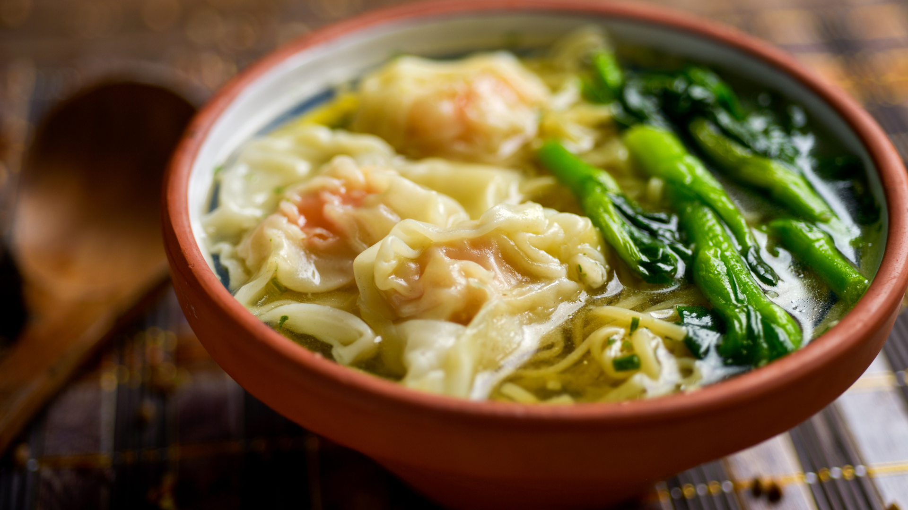

BiteCraft
Crafting flavor, one bite at a time
Navigation
Shrimp Sinigang (Sinigang na Hipon)
Sinigang na Hipon, or Shrimp Sinigang, is a beloved Filipino soup known for its mouthwatering sour and savory broth, brimming with tender shrimp and fresh vegetables. This comforting dish gets its signature tang from tamarind, which perfectly complements the sweet, succulent shrimp. It's a dish that warms the heart and excites the taste buds, perfect for rainy days or when you crave something hearty and satisfying.

Ingredients
- 1 lb (450g) large shrimp, deveined and shells on
- 8 cups (2 liters) water
- 1 medium onion, quartered
- 2 medium tomatoes, quartered
- 1 daikon radish, peeled and sliced
- 1 cup (100g) sitaw (long green beans), cut into 2-inch pieces
- 1 cup (100g) kangkong (water spinach) leaves and tender stems
- 1 green chili pepper (siling pangsigang), optional for extra heat
- 1 packet tamarind soup base (about 40g), or 1/2 cup fresh tamarind pulp
- 2 tbsp fish sauce (patis), or to taste
- Salt and pepper, to taste
Instructions
- Prepare the Broth - In a large pot, bring the water to a boil. Add the onion and tomatoes, then simmer for about 5 minutes until the tomatoes start to break down and release their juices.
- Add the Vegetables - Add the sliced radish and cook for another 5 minutes until it starts to soften. Then, add the long green beans and continue simmering until tender but still crisp, about 3 minutes.
- Season the Broth - Stir in the tamarind soup base (or fresh tamarind pulp if using). Adjust the sourness to your liking by adding more if desired. Season with fish sauce, salt, and pepper to taste.
- Cook the Shrimp - Add the shrimp to the pot and cook for 3-5 minutes, or until they turn pink and opaque. Be careful not to overcook the shrimp, as they can become rubbery.
- Finish with Greens - Add the green chili pepper and kangkong leaves. Stir briefly until the greens are wilted. Taste and adjust seasoning if needed.
- Serve Hot - Ladle the hot soup into bowls and serve with steamed white rice on the side. Enjoy the comforting, tangy flavors of this traditional Filipino favorite.
BiteCraft Bits
- If you don’t have tamarind, you can use calamansi juice or lemon juice for a slightly different but equally tangy flavor.
- Feel free to add other vegetables like eggplant, okra, or even green papaya to your sinigang for extra texture and flavor.
- To use fresh tamarind, boil the pulp in water, mash it, and strain the juice into the soup.
Nutritional Information
- Serving size: 1 bowl
- Calories: 180
- Protein 20g
- Carbohydrates 15g
- Fat 5g
Reviews
“So authentic! Reminds me of my mom’s sinigang. The shrimp were perfectly cooked!” - Sean M.
“Easy and delicious, with just the right amount of sourness. A new family favorite.” - Mark F.